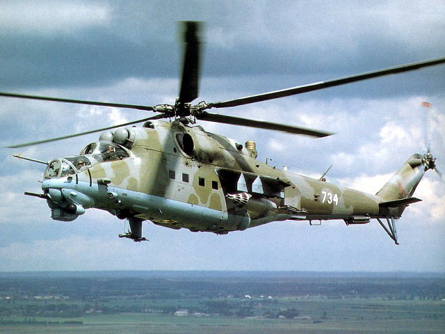

Boeing 747
Informácie
Boeing 747[1], známy aj pod názvom Jumbo Jet[1] je asi najznámejšie dopravné lietadlo vďaka svojmu tvaru trupu. Dosiaľ to bolo najväčšie používané komerčné lietadlo. Jeho kraľovanie vystriedalo lietadlo spoločnosti Airbus s označením A380. Štvormotorové dvojposchodové lietadlo vyrábané spoločnosťou Boeing Commercial Airplanes je schopné prepraviť 416 až 524 pasažierov.
Do novembra 2017 bolo vyrobených až 1540 kusov tohto veľmi úspešného modelu. Toto lietadlo je schopné lietať rýchlosťou až 1 100 km/h na vzdialenosť 14 205 km. Niektoré konfigurácie tohto lietadla sú schopné zaletieť vzdialenosť New York – Hongkong non-stop. Táto vzdialenosť zodpovedá 1/3 vzdialenosti letu okolo celej Zeme. V roku 1998 Boeing 747-400 spoločnosti Qantas preletel vzdialenosť Londýn – Sydney non-stop, ale neviezol ani cestujúcich, ani náklad. Táto vzdialenosť zodpovedá dĺžke 14 000 18 001 km.[2]
Obsah
História
Verzie
Zaujímavosti
Referencie
História
Boeing 747 bol vyvinutý ako dôsledok rýchleho rastu leteckej dopravy v 60-tych rokoch 20. storočia. Prvou spoločnosťou používajúcou tento model sa stala americká spoločnosť Pan Am.
Verzie
- Boeing 747-100 - bol prvýkrát predstavený v roku 1968. Prototyp s názvom „City of Everett“ absolvoval prvý let 9. februára 1969 a v roku 1970 absolvoval prvý komerčný let vo farbách spoločnosti Pan American World Airways. Vojenská verzia tohto lietadla sa nazýva C-19. Nákladná verzia sa nazýva Boeing 747-100F (Freighter).
- Boeing 747SR-je verzia Boeingu 747-100 s kratším doletom, ktorá je schopná prepraviť až 550 cestujúcich. Bola navrhnutá najmä pre japonské vnútroštátne lety
- Boeing 747-200 - je verzia predstavená v roku 1971 so silnejšími motormi ako jej predchodca. Vyrábala sa aj vo variantoch 747-200F Freighter ako nákladná verzia a 747-200C Convertible ako prestaviteľná verzia na prepravu nákladu aj ľudí.
- Boeing 747SP - je používaný od roku 1976. Za celú históriu tohto modelu bolo vyrobených len 45 kusov tohto modelu. Používa sa dodnes v niektorých krajinách stredného východu. Vyznačuje sa kratším trupom a dlhým doletom.
- Boeing 747-300 - mala byť trojmotorová verzia ako konkurencia pre model Lockheed L-1011 TriStar. Model s troma motormi sa nikdy nedostal do prevádzky.
- Boeing 747-400 - je jediná verzia, ktorá sa momentálne vyrába. Tento model má úplne novú kabínu, interiér, ale aj prvky vnútornej zábavy. Je k dispozícii ako verzia 747-400M, 747-400F ale aj ako 747-400BCF.
- Boeing 747 Large Cargo Freighter - je nákladné lietadlo s trupom podobným ako má lietadlo Beluga od spoločnosti Airbus alebo ako Super Guppy.
- Boeing 747-8 - je najnovšia verzia modelu Boeing 747 zaradená 13. februára 2011 o 11:00 v Seattle. Budúcnosť programu 747 V roku 1996 spoločnosť Boeing Commercial Airplanes začala vyvíjať novú generáciu modelu 747 ako reakciu na program Airbus A380. Tento model bude schopný prepraviť až 800 cestujúcich.
Zaujímavosti
- Air Force One je asi najznámejší Boeing 747. Je to lietadlo používané ako lietadlo prezidenta USA.
Boeing 747 sa skladá z viac ako 6 miliónov častí , ktoré pochádzajú z viac ako 33 krajín.
Boeing 747 sa veľmi často používa vo filmoch.
Boeing 747 prepravil viac ako 3,6 miliardy ľudí (to je viac ako polovica svetovej populácie)
Referencie
<>ADMINISTRATION, Federal Aviation. Lessons Learned [online].[cit. 2018-04-17].
stránka
Boeing 747-400 [online].
oficiálnu stránku
BRENJEN. List of preserved and interesting Boeing 747 aircraft [online]. [cit. 2018-04-17].
stránka
